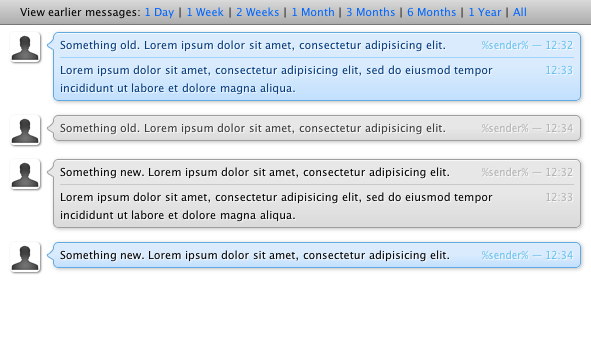

Fed up with the default Skype chat style? I decided to make my own, you can use it too.
Simples.SkypeChatStyle.zip to ~/Library/Application Support/Skype/ChatStylesSimples.SkypeChatStyle.zip to extract it
The code is heavily based on the 'Skype Modern Chat Style'. I have however, altered it to make use of the fact that the chat window is running a recent Webkit. As it has access to CSS3 features it seemed obvious to make use of them, such as animations, rounded corners and gradients.
© 2010 Edd Sowden